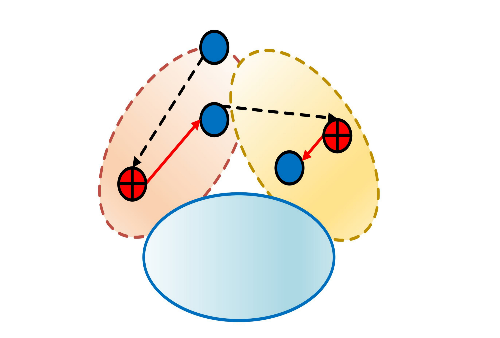
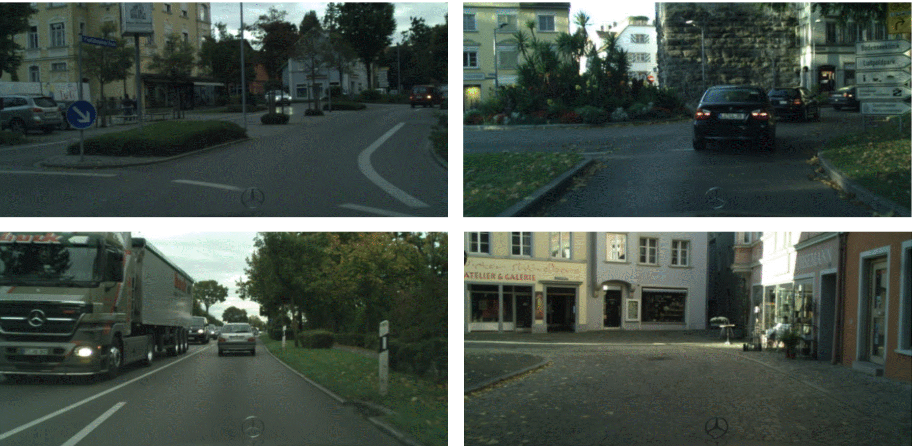
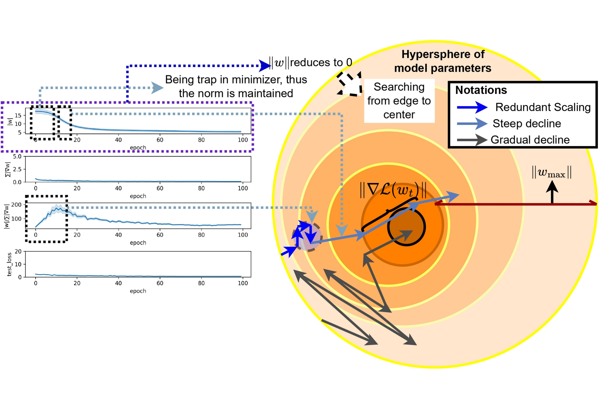

News
Nov 2025 One accepted paper at 3DV 2026.
May 2025 One accepted paper at ECAI 2025.
July 2024 I received PhD scholarship from Research for Ireland.
About
I am PhD Student at Trinity College Dublin under supervision of Dr. Binh-Son Hua. My research interests include conditional 3D Content Synthesis and (3D) Computer Vision. Specifically, I am interested in 3D-based Multi-view Diffusion Model, Diffusion and Flow Matching based Score Distillation, and Continuous Masked Autoregressive Model for Continuous 3D Generation.
Publications


